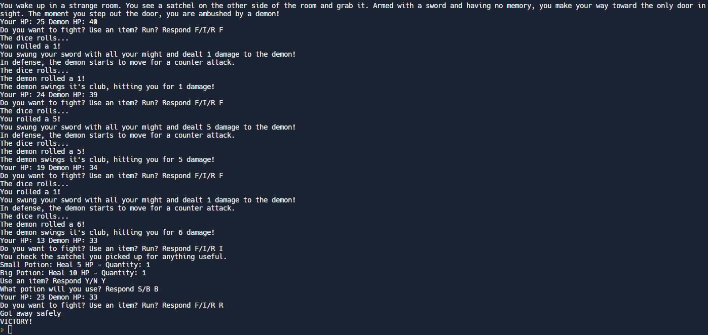

Background
In junior year of high school the coding class I took was AP Computer Science Principles. In this class we mainly focused on the use of the coding language Python. For the AP test we had to take a multiple choice test as well as make a project within a time limit. The project could be any type of computer program so I decided on a game.
Brainstorming
When I think about games that I play, most of my favorite ones include some kind of turn based combat. For example, games like Pokemon, Persona, and Fire Emblem are some of my favorites. A basic turned based game is simple enough to where I can finish it in time to write about it for the test. I also enjoy story games so adding any type of story would make it more intersting. Now as for the setting, I am big on fantasy so why not start there?
Requirements & Needs
We were given 9 hours of classtime to create the project and answer questions about it. Needed to use specific code like functions and loops. Then the questions that were asked were like "What is the point of the code?" as well as having to explain a part of the code.
Collaboration
Although we weren't able to ask our teacher for help, we could always ask our peers questions. This project showed me how important collaboration is. Throughout the creation process, people helped me find bugs in my code while others helped me brainstorm a solution to these bugs. In the end, I was able to finish everything on time thanks to my peers.
The Work Process
With the initial idea in mind, having another point of reference would be a good way to organize my thoughts. Using a mood board (albeit very basic), I was able to come up with the basic story as well as what would be happening in the game.

When I think of fantasy the first things that come to mind are knights, monsters, and medieval times. The first thing that came to mind would you would play as some swordsman fighting a monster. Thus, the base of the game was conceptualized.
In order to code the game, I used a website called Replit. It has different kinds of coding languages on it
so I ended up coding this game in Python.
The code itself uses different coding structures thoughout. The turn itself uses a function but the small things like the
potion uses an array. Most of the different structures were used in order to meet the requirements of the test.
I used most of the 9 hours to complete the project, only needing one hour to record a video of the code and to write up about it.
This project is one of the ones I'm most proud of. There are so many different ways I can add on to this code.
Take a look at the code here here.

Results.
The combination of my multiple choice score and this project, I was able to get a 4/5 on the AP test.
This was just great news.
The process of making this game showed me what I could really do and now that I'm looking at the code, I can always add on to it somehow.
I could add new characters, make a continuation of the level, and even add new battles. Be on the lookout for a game like this in the future.
It might be made by me. :D